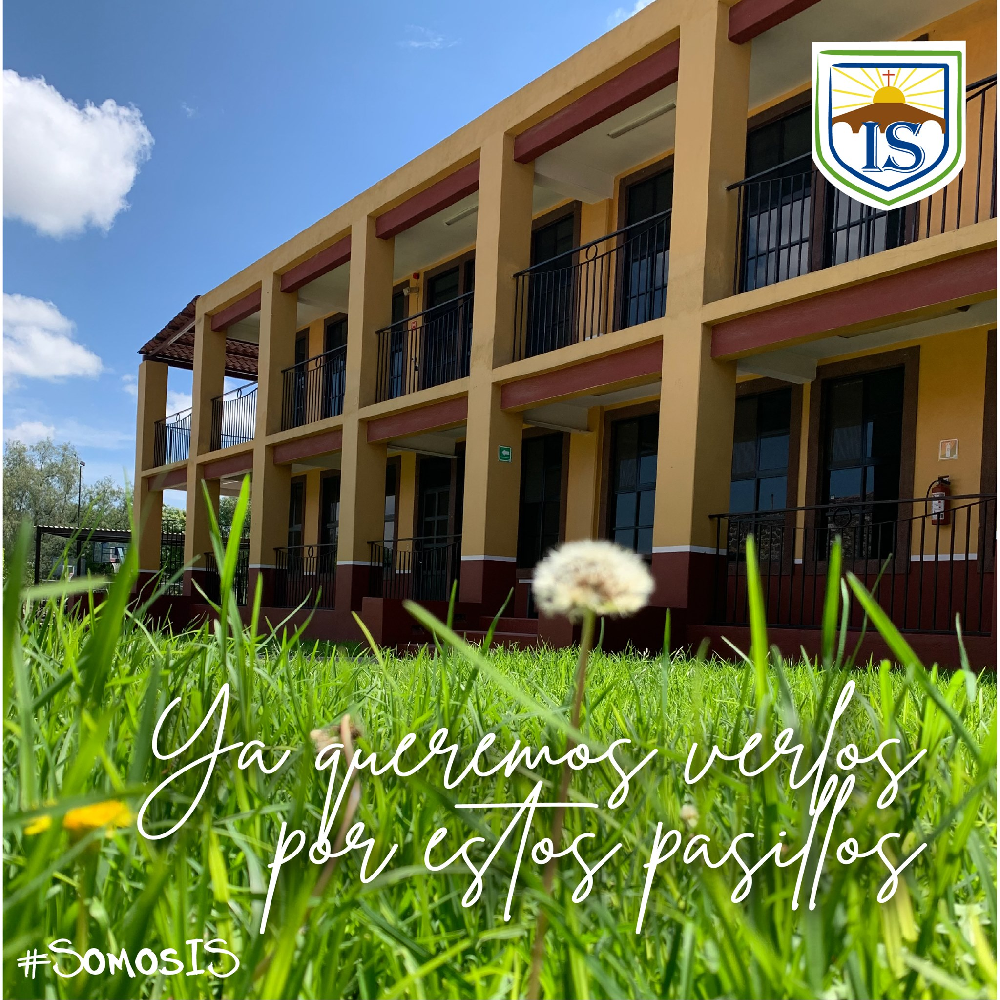
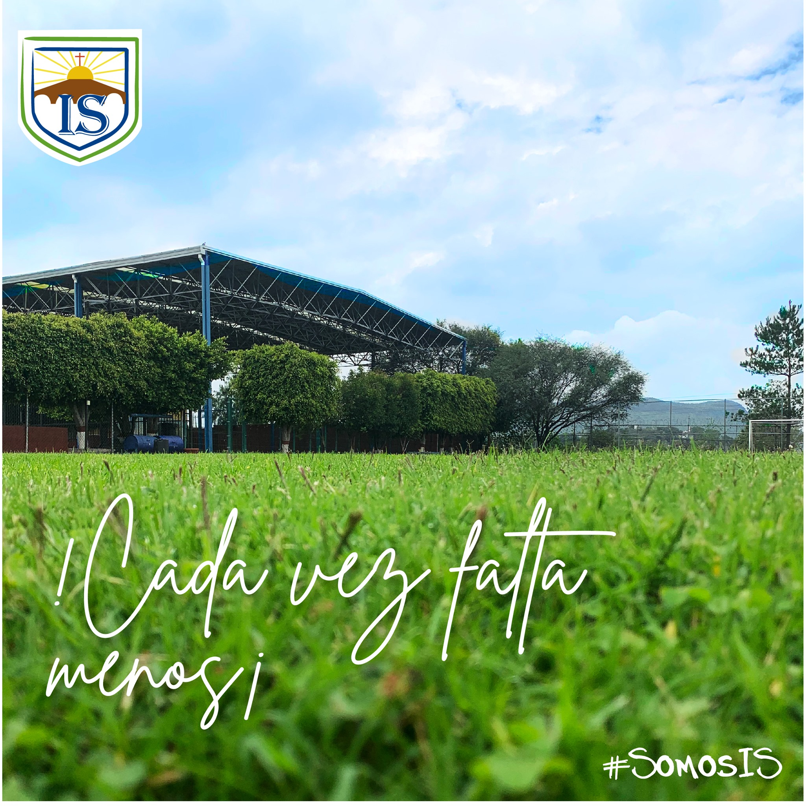
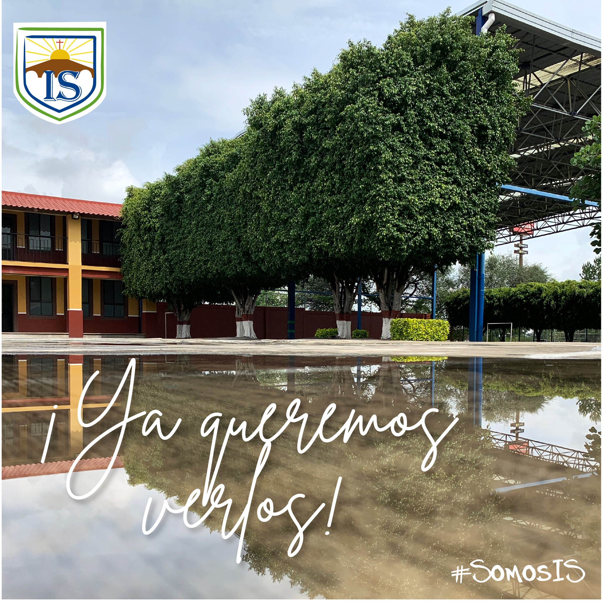
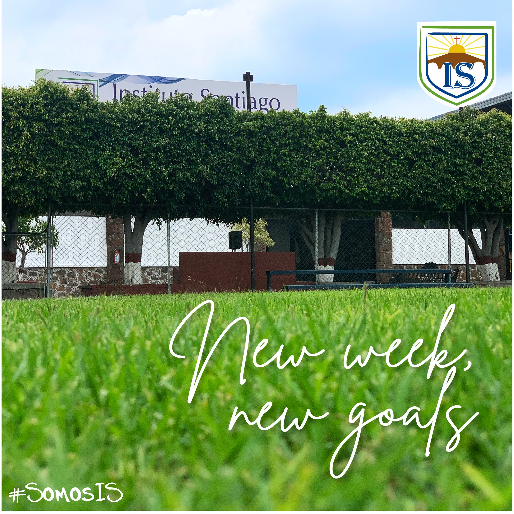
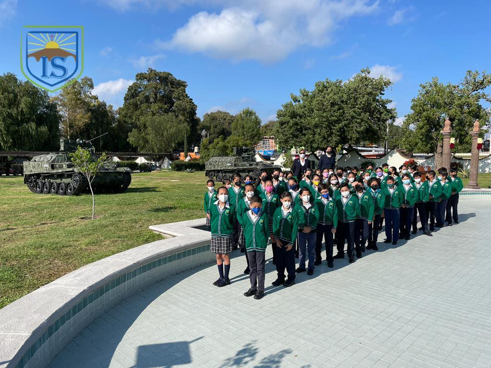
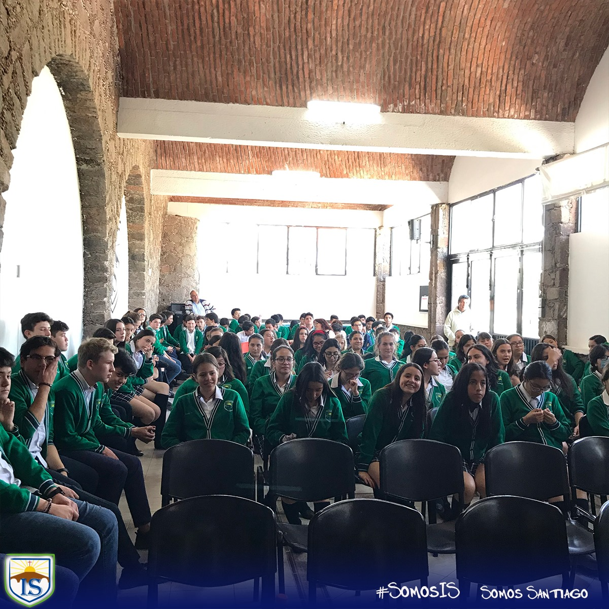
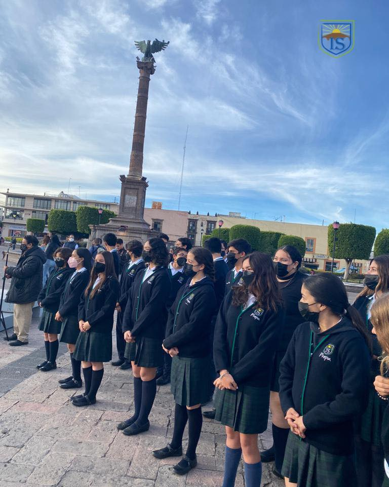
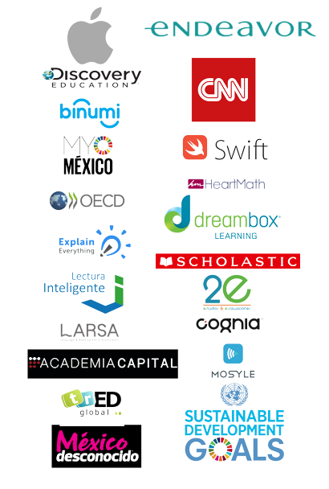

Instituto Santiago
Niños y Jóvenes felices con mayor preparación
Somos una Institución Educativa fundada en 1996 en favor de la niñez y juventud de San Juan del Río, fomentando la educación en valores humanos, con un carisma y estilo alegre a través de reconocer al alumno en el centro del proceso de enseñanza-aprendizaje.
- 
- 
- 
- 
Niveles de educacion
La escuela Instituto Santiago es reconocida por su alta calidad educativa en los niveles de primaria, secundaria y preparatoria. Con un enfoque centrado en el desarrollo integral de sus estudiantes, esta institución ofrece un entorno de aprendizaje estimulante y enriquecedor.

Primaria
- Bicultural
- Música
- Educación en la Fe
- Matroactividades
- Certificación de Inglés por la Universidad de Cambridge niveles: Starters - Movers - Flyers - Key
- Examination Toefl Primary
- Paseos y Viajes Culturales
- Talleres recreativos, ambientales, artísticos y musicales
- Equipos representativos de Fútbol y Basquetbol
- Modelo IMPACT (Knotion)
- Ambiente Sano y Cordial
- Maestros en continua captación y certificados como apple teacher.

Secundaria
- Bicultural
- Actividades Formativas, humanistas y de sensibilización
- Talleres deportivos y Artísticos
- Campamentos recreativos
- Exámenes TOEFL junior
- Proyecto Liderazgo
- Certificación de inglés por la Universidad de Cambdrige: KEy PET Y FCE
- Modelo IMPACT

Preparatoria
- Trilingüe: Español, Inglés certificación de la Universidad de Cambridge y Francés certificación de la Alianza Francesa
- Bachillerato General incorporado a la SEDEQ
- Programa de Ética y Valores
- Programas computacionales nivel avanzado (AutoCAD, Photoshop, Corel, Office)
- Creatividadr
- Orientación Vocacional
- Convenios de Vinculación para becas de las mejores universidades del país
- Talleres recreativos, artísticos y musicales
